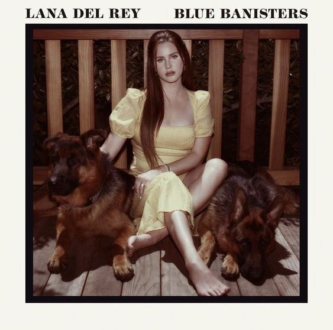
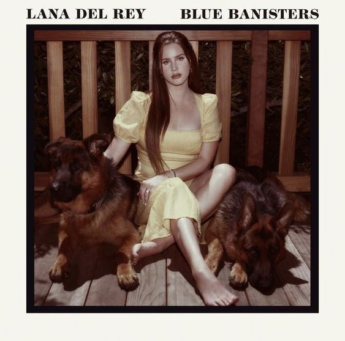

Биография
Ранние годы
Настоящее имя певицы — Элизабет Вулридж Грант, а Лана Дель Рей — это псевдоним, но именно так её называют все окружающие. Лана появилась на свет 21 июня 1985 года в городе Нью-Йорке, в США. Помимо девочки в семье было ещё двое детей: сын Чарли и младшая дочка Кэролайн.
Мама Ланы была преподавательницей, а отец — состоятельным инвестором, и благодаря внушительному состоянию он с удовольствием вкладывал средства в музыкальное развитие своей дочери.
Сама девочка тянулась к музыке с юных лет. Она обожала петь вместе со школьным хором, но при этом с детьми особо не общалась и предпочитала всё свободное время тратить на просмотр голливудских фильмов или обучение игре на гитаре.
Окончив школу, Лана продолжила учёбу в Государственном вузе Нью-Йорка, не забывая при этом о музыке. Поэтому позже ради этого она даже бросила обучение, но чуть позже решила всё-таки получить образование в Фордемском университете.
Музыкальная карьера
Свой творческий путь Лана начала ещё в молодости, а первым её крупным выступлением стало исполнение нескольких композиций на разогреве одной рок-группы на фестивале MTV Unplugged. При этом первый альбом Элизабет под названием «Kill Kill» не получил популярности, хотя и был доступен на площадке iTunes на протяжении нескольких месяцев.
В 2011 году Лана выкладывает на своём YouTube-канале композицию «Video Games», которая наводит настоящий фурор в музыкальной сфере. За очень короткий срок Лана получает популярность, а билеты на ее первый сольный концерт были проданы менее чем за час.

В 2012 году Лана выпускает альбом под названием «Born to Die», который получает неоднозначные отзывы от критиков. А вот публика оказалась более лояльной и тепло приняла новый релиз. В своей музыке Лана начинает экспериментировать, и в её произведениях можно услышать смесь из нескольких музыкальных жанров: ретро, лаунж, инди-поп и дрим-поп. Начиная с этого момента песни певицы стали стабильно попадать в музыкальные чарты и держаться на верхушках рейтингов многие месяцы. Чуть позже альбом «Born to Die» был дополнен и переиздан в новом формате.
В 2013 году Лана выпускает композицию «Young and Beautiful», которые была исполнена специально для фильма «Великий Гэтсби». Этот год оказался продуктивным, и певица выпустила ещё несколько мини-альбомов и короткометражный фильм под названием «Tropico».
Свой третий альбом исполнительница представила миру в 2014 году. Он носил название «Ultraviolence», и две песни с этой пластинки были использованы Тимом Бертоном для фильма «Большие глаза» в качестве саундтрека.
Уже через год певица представила следующий альбом, назвав его «Honeymoon». У певицы сложились уникальный и узнаваемый стиль и подача, которые заметно выделяли её из общей массы артистов, благодаря чему аудитория продолжала активно расти.
Пятый альбом певицы был представлен в 2017 году. Он носил название «Lust for Life», а информацию о самом релизе раскрывали постепенно. На этой пластинке присутствуют не только сольные композиции, но и коллаборации с другими музыкальными исполнителями.
Известно, что сразу после этого она начала работать над следующим релизом. Он вышел в свет в 2019 году под названием «Norman Fucking Rockwell!». Артистка не остановилась на этом, и уже в 2021 году представила альбом «Chemtrails Over the Country Club», а чуть позже к нему добавилась следующая работа — релиз под названием «Blue Banisters».
 

Личная жизнь
Первый союз Лана создала в возрасте 20 лет со Стивеном Мертинсом, который был брокером и продвигал музыку певицы. Пара состояла в отношениях более семи лет, но до свадьбы дело так и не дошло, и молодые люди расстались.
Затем избранником певицы стал Барри Джеймс О’Нил, и Лане даже приходилось жить на два города. Но эти отношения продлились всего три года, а затем пара приняла решение расстаться.
Начиная с 2017 года Лана была в отношениях с Джеральдом Эрлом Гиллумом, но спустя некоторое время они разошлись по неизвестным причинам. А вот с осени 2019 года Лана была с Шоном Ларкиным, но из-за загруженных графиков работы паре пришлось разорвать отношения в 2020 году.